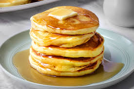

Pancakes Recipe

Description
This pancakes recipe is a classic breakfast dish that's perfect for a lazy weekend morning. These fluffy pancakes are easy to make and can be customized with your favorite toppings.
Ingredients
- 1 cup all-purpose flour
- 2 tablespoons sugar
- 2 teaspoons baking powder
- 1 teaspoon salt
- 1 cup milk
- 2 large eggs
- 1/4 cup melted butter
Steps
- In a large bowl, whisk together the flour, sugar, baking powder, and salt.
- In another bowl, whisk together the milk, eggs, and melted butter.
- Pour the wet ingredients into the dry ingredients and stir until just combined.
- Heat a lightly oiled griddle or frying pan over medium-high heat.
- Pour 1/4 cup of batter for each pancake onto the griddle.
- Cook until bubbles form on the surface, then flip and cook until golden brown on the other side.
- Serve warm with your favorite toppings.
Home